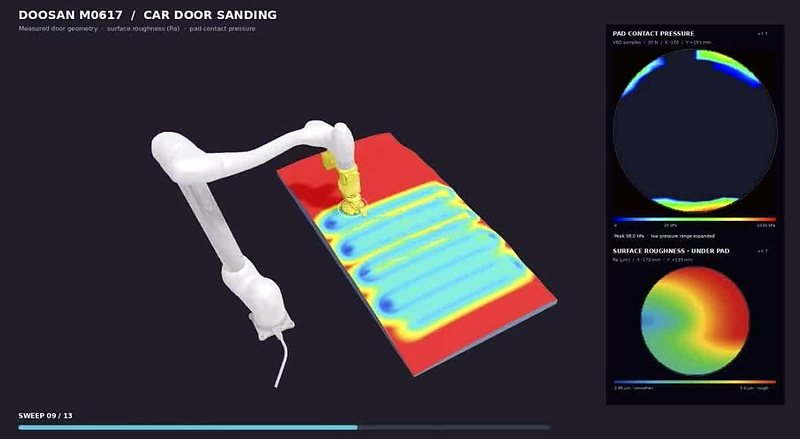
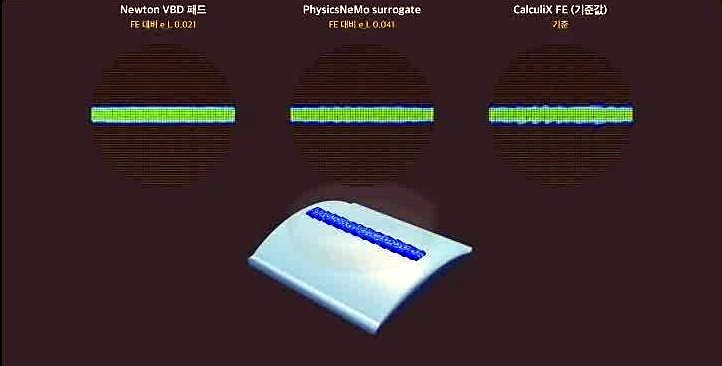
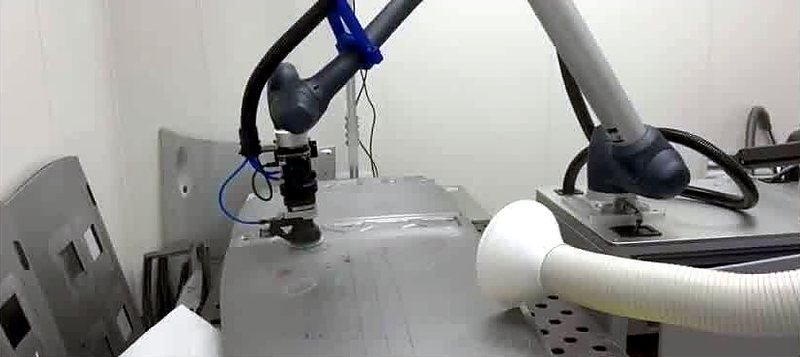
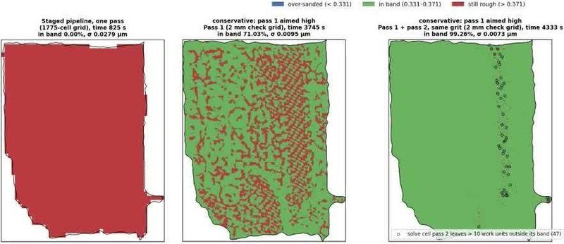
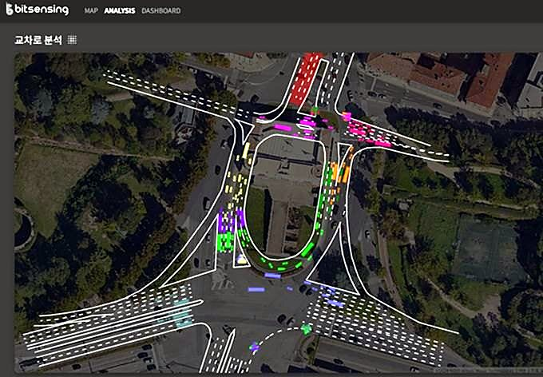
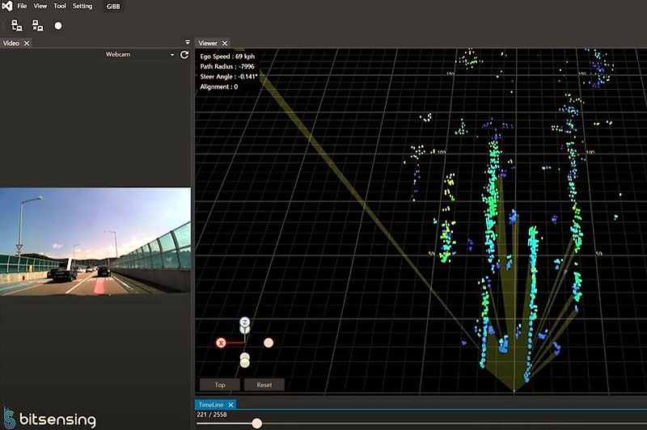
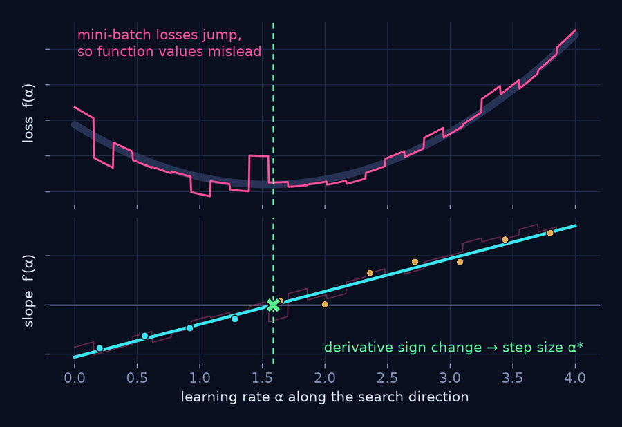
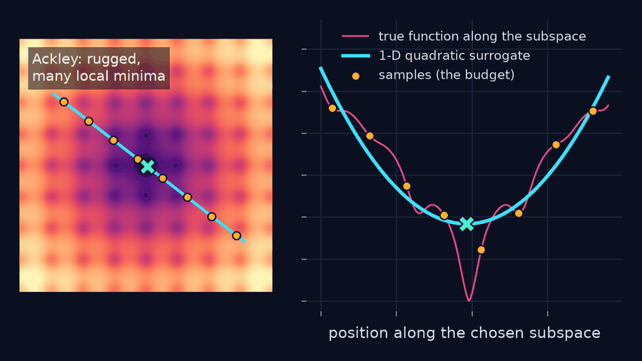
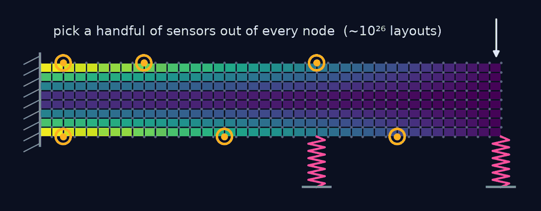
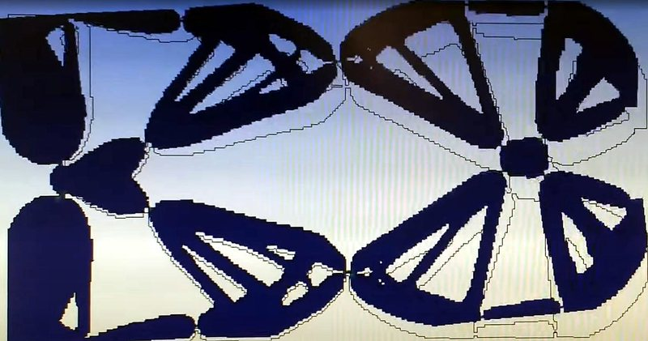

Younghwan Chae, PhD채영환
I formulate industrial problems as optimization problems and ship them as production products.
Principal Data Scientist & ML Engineer at Doosan Robotics, Physical AI Platform Team: I own the robotic sanding solution and build LLM agent tool orchestration. Before that, camera/radar fusion perception and tracking at bitsensing, shipped to mass production. PhD in numerical optimization from the University of Pretoria.
Six peer-reviewed papers, ten patent applications. Outside work I open-source a quant optimization stack, which led to selection as Next Securities API Development Ambassador (2026).
 Doosan Robotics
Doosan Robotics
Principal Data Scientist & ML Engineer · Physical AI Platform Team
- Robotic sanding, end to end. I own the solution: from a raw 3D scan to a sanding recipe that hits the target roughness.
- Surface fitting. CAD-free RBF fitting on raw point clouds, sub-0.5 mm RMSE; coverage paths solved as optimization, with curvature-adaptive spacing and surface-normal tool orientation.
- Physics model. Derived the surface-quality model (contact pressure → accumulated work → Ra) and calibrated it with experiments I designed and FEM ground truth.
- Surrogate models. Calibrated the NVIDIA Newton simulator against FEM, generated training data at scale, and trained NVIDIA PhysicsNeMo surrogates plus a residual surrogate on the FEM error. One pressure-field evaluation drops from about an hour of FEM to about 0.24 s, roughly 15,000× faster.
- Surrogate-based path optimization. The surrogate sits inside the path optimizer, so recipes are planned before the robot moves; measured Ra landed within 7% of target against a 10% tolerance. This is my PhD surrogate research, applied in industry.
- Agents. LLM tool orchestration for Agentic Robot OS: the agent plans the job and calls vision, surface-fitting and sanding tools in order.
- Also built. An LLM + knowledge-graph Q&A system, an NVIDIA Cosmos Cookoff pallet-stacking demo, depalletizing vision (RF-DETR with LoRA, SAM) and a single-camera imitation-learning data pipeline.
Presented at NVIDIA AI Day Seoul 2026 in a talk with NVIDIA on Newton contact simulation for industrial sanding. The images are from that talk.




bitsensing
Technical Research Personnel (alternative military service, completed)
AI Perception Engineer · Signal Processing Team Sep 2023 – Aug 2025
- 3D radar perception on 4D imaging-radar point clouds: detection with PV-RCNN, point features with DGCNN, 3D tracking with CenterPoint-BEV and AB3DMOT.
- Super-resolution DoA. Direction-of-arrival estimation posed as an inverse problem, recovering the angular spectrum from undersampled measurements: 2× angular resolution over FFT/beamforming, validated in the field.
- Data pipelines for signal denoising, bias correction and synthetic data generation.
- Edge deployment: distillation, pruning and TensorRT INT8 on NVIDIA Jetson (C++), with no accuracy loss.
- Seven patent applications in AI signal processing, uncertainty quantification and embedded learning.
Sensor Fusion Engineer · Tracking and Application Team Aug 2022 – Sep 2023
- Camera/radar fusion. Calibration solved as non-linear reprojection-error minimization with multi-view geometry: fusion RMSE cut by 51%.
- Tracking of up to 256 targets across 12 lanes, Hungarian SORT with IMM/Kalman, on embedded hardware; co-first author of the IEEE Sensors Journal paper.
- Camera perception: YOLO 8-class obstacle detection, lane segmentation (PP-LiteSeg, U-Net), ML false-positive removal.
- Shipped to mass production: about 200 traffic radars in 8 countries. Led the auto-calibration motor control that holds the radar's field of view.


University of Pretoria
Postgraduate Researcher & Assistant Lecturer (Optimum Design, Numerical Methods) · advisor Daniel N. Wilke
PhD, Numerical Optimization 2017 – 2021
- Gradient-only surrogates for learning rates. Mini-batch losses are discontinuous, so function values mislead. GOALS fits cheap 1-D surrogates to directional derivatives only and steps to where their sign changes, giving stable, consistent training. Applied Intelligence, 2023.
- Classification-based line search (GOCLS) that bounds the step from the probability of a sign change, tested on ResNet-18 and EfficientNet-B0.
- Sub-dimensional surrogates. High-dimensional problems under a small evaluation budget, split into low-dimensional surrogate subspaces that trade exploration against resolution. Advances in AI Reviews, 2019.
MEng, cum laude 2016 · BEng Hons 2015
- Sensor placement on FEM simulations as an inverse problem and a budget-constrained combinatorial selection over about 1026 layouts, solved with a rank-variance heuristic. Engineering Structures, 2017.
- BEng thesis: FEM topology optimization of a compliant plier for force transmission, 3D-printed and checked with strain gauges.




University of Pretoria
- PhD, Mechanical Engineering, Numerical Optimization 2017 – 2021
- MEng, Mechanical Engineering, cum laude 2016
- BEng Hons, cum laude 2015 · BEng, cum laude 2011 – 2014
Advisor: Daniel N. Wilke, co-author of Practical Mathematical Optimization.
Honors
- Top rating, annual performance review, Doosan Robotics 2025
- Academic Honorary Colours, MEng and BEng 2017, 2015
- South African National Mathematics Olympiad Top 100 2010
- Track-based integration of radar and vision sensors. IEEE Sensors Journal, 2025 (co-first author)
- Deep learning-based kick motion recognition in mmWave radar. IEEE Sensors Journal, 2024
- Deep learning-based kick gesture recognition with 60 GHz radar. IEEE RadarConf, 2024
- Gradient-only surrogate to resolve learning rates for deep networks. Applied Intelligence, 2023
- Sub-dimensional surrogates for high-dimensional ML optimization. Advances in AI Reviews, 2019
- Rank-variance formulation for efficient sensor placement. Engineering Structures, 2017
Ten patent applications, 2023 – 2025, domestic and international (US, EP): sensor fusion, AI-based signal processing, object tracking, uncertainty quantification.